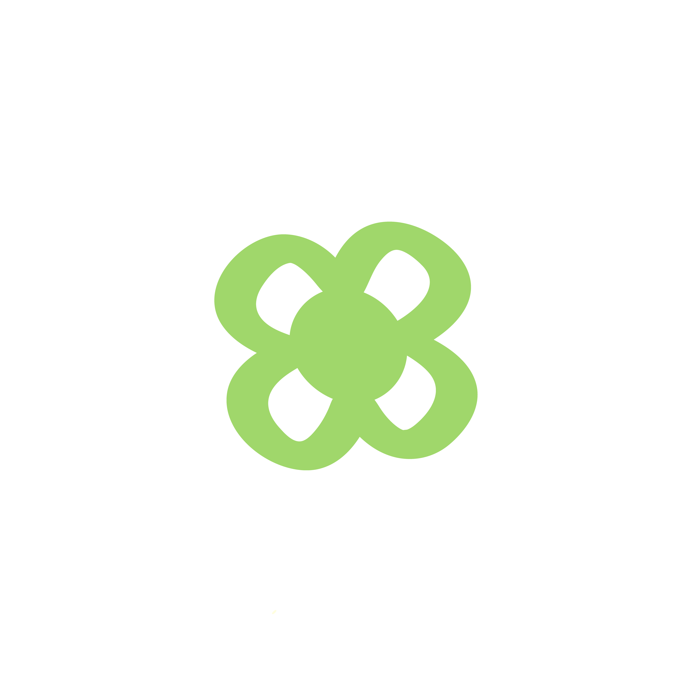

Queridos Desconocidos
tengo un mensaje
tengo un mensaje
Sobre mí
Querido desconocido,
Si has llegado hasta aquí es tu señal para conocerme.
Soy Kirco y llevo escribiendo cartitas a desconocidos desde 2021. Luego camino por la calle buscando el lugar más especial para dejarla, un banco del parque, un asiento de metro o incluso colgado de una ramita de un árbol...
Todas mis cartitas son 100% humanas, sin IA. Las dejo por Madrid para quién las necesite.
Y quién sabe, igual tú eres el próximo en encontrarla.
Att. @by_kirco
mi historia↑ toca la cartita para abrirla
Querido Desconocido,
he preparado un test para ti y así sabré la carta que necesitas leer.
¿Quieres recibir una carta personalizada?

↑ toca el sobre para abrirlo